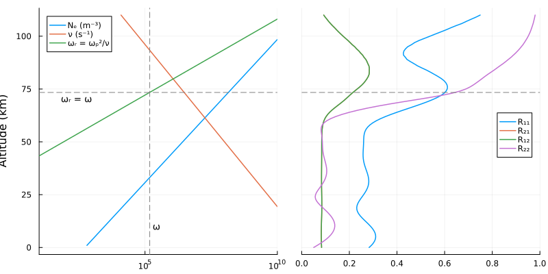
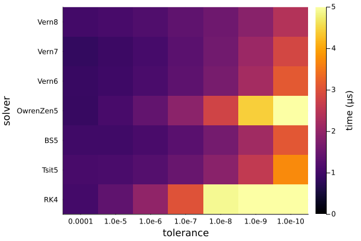

Solvers for ionosphere reflection coefficient
LongwaveModePropagator uses the technique presented by Budden (1955) to compute the reflection coefficient of a horiontally stratified ionosphere consisting of an anisotropic, collisional plasma.
Budden (1955) derives a differential equation for the reflection coefficient $\bm{R}$:
\[\frac{2i}{k}\frac{\mathrm{d}\bm{R}}{\mathrm{d}z} = W_{21} + W_{22}\bm{R} - \bm{R}W_{11} - \bm{R}W_{12}\bm{R}\]
where $W$ is a $4\times 4$ matrix divided into four $2\times 2$ submatrices each containing components of the $\bm{T}$ matrix.
To obtain the reflection coefficient $\bm{R}$ at any level, we integrate $\mathrm{d}\bm{R}/\mathrm{d}z$ downward through the ionosphere from a great height and the height at which we stop is $\bm{R}$ for a sharp boundary at that level with free space below.
The reflection coefficient matrix $\bm{R}$ consists of four complex reflection coefficients for the different combinations of incident and reflected wave polarization. These reflection coefficients are also functions of the wave angle of incidence, and therefore the integration of $\mathrm{d}\bm{R}/\mathrm{d}z$ occurs tens of thousands to hundreds of thousands of times for every HomogeneousWaveguide in the GRPF mode finder. It is therefore extremely important that the differential equations solver be as efficient as possible to minimize runtime. The mode finder is responsible for more than 90% of the runtime of LongwaveModePropagator, and most of the mode finder runtime is the ionosphere reflection coefficient integration.
In this example, we will compare solvers and tolerances from DifferentialEquations to determine the most efficient combination with reasonable robustness and accuracy. We will begin by looking at the reflection coefficients as a function of height.
First we load the packages we need.
using Statistics
using Plots
using OrdinaryDiffEq
using Interpolations
using LongwaveModePropagator
using LongwaveModePropagator: StaticArrays, QE, ME
const LMP = LongwaveModePropagatorR(z)
Let's examine the four reflection coefficients for the ionosphere as a function of height.
We will use a typical daytime ionosphere with a Wait and Spies (1964) profile and a wave frequency of 24 kHz. The background magnetic field will be vertical with a magnitude of 50,000 nT. We also need to specify the wave angle of incidence on the ionosphere. We'll use a real $\theta = 75°$.
species = Species(QE, ME, z->waitprofile(z, 75, 0.32), electroncollisionfrequency)
frequency = Frequency(24e3)
bfield = BField(50e-6, π/2, 0)
ea = EigenAngle(deg2rad(75));We start the integration at a "great height". For longwaves, anything above the D-region is fine. LongwaveModePropagator defaults to a topheight of 110 km.
topheight = 110e3
Mtop = LMP.susceptibility(topheight, frequency, bfield, species)
Rtop = LMP.bookerreflection(ea, Mtop)2×2 StaticArraysCore.SMatrix{2, 2, ComplexF64, 4} with indices SOneTo(2)×SOneTo(2):
0.71414-0.226766im 0.0744954+0.0547451im
0.0744954+0.0547451im -0.979616+0.0245265imThe starting solution Rtop comes from a solution of the Booker quartic for the wavefields at topheight.
We use OrdinaryDiffEq.jl to integrate LongwaveModePropagator.dRdz. Although it's not needed for computing the ionosphere reflection coefficient, dRdz takes a ModeEquation argument, specifying a complete waveguide, including Ground, for convenience.
ground = GROUND[1]
waveguide = HomogeneousWaveguide(bfield, species, ground)
me = PhysicalModeEquation(ea, frequency, waveguide);Then we simply define the ODEProblem and solve.
prob = ODEProblem{false}(LMP.dRdz, Rtop, (topheight, 0.0), me)
sol = solve(prob, RK4(); abstol=1e-9, reltol=1e-9);Let's plot the reflection coefficients next to the electron density and collision frequency curves. Because the reflection coefficients are complex-valued, we will plot their magnitude.
zs = topheight:-1000:0
ne = species.numberdensity.(zs)
nu = species.collisionfrequency.(zs)
Wr = LMP.waitsparameter.(zs, (frequency,), (bfield,), (species,))
altinterp = linear_interpolation(reverse(Wr), reverse(zs))
eqz = altinterp(frequency.ω) # altitude where ω = ωᵣ
ne[end] = NaN # otherwise Plots errors
Wr[end] = NaN
p1 = plot([ne nu Wr], zs/1000;
xlims=(10, 10^10), xaxis=(scale=:log10),
ylabel="Altitude (km)",
labels=["Nₑ (m⁻³)" "ν (s⁻¹)" "ωᵣ = ωₚ²/ν"], legend=:topleft,
linewidth=1.5);
vline!(p1, [frequency.ω]; linestyle=:dash, color="gray", label="");
hline!(p1, [eqz/1000]; linestyle=:dash, color="gray", label="");
annotate!(p1, frequency.ω, 10, text(" ω", :left, 9));
annotate!(p1, 70, eqz/1000-3, text("ωᵣ = ω", :left, 9));
R11 = vec(abs.(sol(zs; idxs=1)))
R21 = vec(abs.(sol(zs; idxs=2)))
R12 = vec(abs.(sol(zs; idxs=3)))
R22 = vec(abs.(sol(zs; idxs=4)))
p2 = plot([R11 R21 R12 R22], zs/1000;
xlims=(0, 1),
yaxis=false, yformatter=_->"",
legend=:right, labels=["R₁₁" "R₂₁" "R₁₂" "R₂₂"],
linewidth=1.5);
hline!(p2, [eqz/1000]; linestyle=:dash, color="gray", label="");
plot(p1, p2; layout=(1,2), size=(800, 400))
Generate random scenarios
Now that we've seen what the reflection coefficient functions look like, we'll focus on finding an accurate but efficient solver.
We will evaluate the solutions across a range of different random ionospheres, frequencies, and angles of incidence. Each scenario is described by a PhysicalModeEquation.
function generatescenarios(N)
eas = EigenAngle.(complex.(rand(N)*(π/2-π/6) .+ π/6, rand(N)*deg2rad(-10)))
frequencies = Frequency.(rand(N)*50e3 .+ 10e3)
B = rand(30e-6:5e-7:60e-6, N)
# avoiding within 1° from 0° dip angle
bfields = BField.(B, rand(N)*(π/2-0.018) .+ 0.018, rand(N)*2π)
hps = rand(N)*20 .+ 69
betas = rand(N)*0.8 .+ 0.2
scenarios = Vector{PhysicalModeEquation}(undef, N)
for i = 1:N
species = Species(QE, ME, z->waitprofile(z, hps[i], betas[i]),
electroncollisionfrequency)
ground = GROUND[5] ## not used in integration of R
waveguide = HomogeneousWaveguide(bfields[i], species, ground)
me = PhysicalModeEquation(eas[i], frequencies[i], waveguide)
scenarios[i] = me
end
return scenarios
end
scenarios = generatescenarios(30);Reference solutions
To evaluate the accuracy of the reflection coefficients, we compare to a very low tolerance Runge-Kutta Order 4 method. The DifferentialEquations implementation of RK4 uses adaptive stepping.
The LongwaveModePropagator.integratedreflection function does the integration process above for us and returns the reflection coefficient at the ground.
ip = IntegrationParams(tolerance=1e-14, solver=RK4(), maxiters=1_000_000)
params = LMPParams(integrationparams=ip)
Rrefs = [LMP.integratedreflection(scenario; params=params) for scenario in scenarios];Evaluate solvers
Now let's compute and time the results a set of different methods for a range of tolerances. We repeat the integration N = 25 times for each combination of parameters to get a more accurate average time.
function compute(scenarios, tolerances, solvers)
dims = length(scenarios), length(tolerances), length(solvers)
Rs = Array{StaticArrays.SMatrix{2,2,ComplexF64,4}}(undef, dims...)
times = Array{Float64}(undef, dims...)
for k in eachindex(solvers)
for j in eachindex(tolerances)
ip = IntegrationParams(tolerance=tolerances[j], solver=solvers[k])
params = LMPParams(integrationparams=ip)
for i in eachindex(scenarios)
# warmup
R = LMP.integratedreflection(scenarios[i]; params=params)
# loop for average time
N = 25
t0 = time_ns()
for n = 1:N
R = LMP.integratedreflection(scenarios[i]; params=params)
end
ttotal = time_ns() - t0
Rs[i,j,k] = R
times[i,j,k] = ttotal/N
end
end
end
return Rs, times
end
tolerances = [1e-4, 1e-5, 1e-6, 1e-7, 1e-8, 1e-9, 1e-10]
tolerancestrings = string.(tolerances)
solvers = [RK4(), Tsit5(), BS5(), OwrenZen5(), Vern6(), Vern7(), Vern8()]
solverstrings = ["RK4", "Tsit5", "BS5", "OwrenZen5", "Vern6", "Vern7", "Vern8"]
Rs, times = compute(scenarios, tolerances, solvers);We'll measure the error in the reflection coefficient matrices as the maximum absolute difference of the four elements of the matrix compared to the reference reflection coefficient matrix.
function differr(a, ref)
differences = a .- ref
aerror = similar(a, Float64)
for i in eachindex(differences)
absdiff = abs.(differences[i])
aerror[i] = maximum(absdiff)
end
return aerror
end
Rerrs = differr(Rs, Rrefs)
mean_Rerrs = dropdims(mean(Rerrs; dims=1); dims=1)
heatmap(tolerancestrings, solverstrings, permutedims(log10.(mean_Rerrs));
clims=(-9, -2),
xlabel="tolerance", ylabel="solver",
colorbar_title="log₁₀ max abs difference", colorbar=true)
And the average runtimes are
mean_times = dropdims(mean(times; dims=1); dims=1)
heatmap(tolerancestrings, solverstrings, permutedims(mean_times)/1e6;
clims=(0, 5),
xlabel="tolerance", ylabel="solver",
colorbar_title="time (μs)", colorbar=true)
The best accuracy occurs with Vern7 and experiment's we've done looking at the sensitivity of the mode solutions to integration tolerance have shown we can get away with a tolerance of 1e-4. To play it safe, the default used by LMP is 1e-5. The integration accuracy improves considerably for relatively little additional computation time if the tolerance is changed to 1e-9, but that accuracy is not required.
This page was generated using Literate.jl.